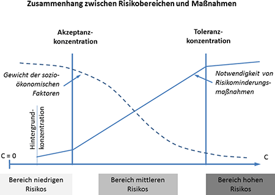

(1) Im Risikokonzept resultieren aus Akzeptanz- und Toleranzrisiko drei Risikobereiche:
(2) Ziel des Risikokonzeptes ist es, Expositionen unterhalb der Akzeptanzkonzentration zu erreichen. Der Arbeitgeber hat nach diesem Konzept eine Priorisierung der durchzuführenden Maßnahmen vorzunehmen. Je höher die Konzentration eines krebserzeugenden Stoffes am Arbeitsplatz und damit das Risiko, desto dringlicher ist die Notwendigkeit zusätzlicher betrieblicher Risikominderungsmaßnahmen.
(3) Diese mit dem Risiko steigende Notwendigkeit von Risikominderungsmaßnahmen und ihr Verhältnis zu den drei Risikobereichen sind in nachstehender Grafik dargestellt:
| Abbildung: Zusammenhang zwischen Risikobereichen und Maßnahmen  C: Konzentration in der Luft am Arbeitsplatz Der Bereich niedrigen Risikos umfasst den Bereich bis zum Akzeptanzrisiko. In diesem Bereich ist die Notwendigkeit der Durchführung zusätzlicher Maßnahmen gering. Der Bereich des mittleren Risikos umfasst den Bereich vom Akzeptanz- bis zum Toleranzrisiko. In diesem Bereich steigt die Notwendigkeit zusätzlicher Maßnahmen deutlich an, je näher die Konzentration bei der Toleranzkonzentration ist. Der Bereich des hohen Risikos beginnt oberhalb des Toleranzrisikos. In diesem Bereich besteht eine unmittelbare Notwendigkeit zusätzlicher Maßnahmen, um zumindest den Bereich mittleren Risikos zu erreichen. |
(4) Der Arbeitgeber hat zu ermitteln, welchem Risikobereich die Expositionen zuzuordnen sind und die dem jeweiligen Risikobereich zugeordneten Maßnahmen gemäß Tabelle 1 zu ergreifen. Diese sind in fünf Maßnahmengruppen gegliedert:
(5) Arbeitsmedizinische Vorsorge richtet sich nach der Verordnung zur arbeitsmedizinischen Vorsorge (ArbMedVV) und den dazu veröffentlichten Arbeitsmedizinischen Regeln (AMR).
Tabelle 1: Besondere Maßnahmen bei Exposition gegenüber krebserzeugenden Gefahrstoffen in Abhängigkeit der jeweiligen Risikobereichen
| 1. Substitution | |||
| I. Niedriges Risiko | II. Mittleres Risiko | III. Hohes Risiko | |
| Substitutionsprüfung | Ja | Ja | Ja |
| Erläuterung | Der Arbeitgeber muss regelmäßig die Möglichkeit einer Substitution durch Gefahrstoffe mit geringerer Gesundheitsgefährdung prüfen, siehe TRGS 600. | ||
| Umsetzung der Substitution (Stoff und Verfahren), expositionsmindernde Verwendungsform, siehe auch TRGS 600, Anlage 3 | Ja, wenn im Rahmen der Verhältnismäßigkeit möglich. | Ja, im Rahmen der Verhältnismäßigkeit verpflichtend (wenn technisch möglich), unter Berücksichtigung von wissenschaftlichen Erkenntnissen und Zumutbarkeit). | Ja, prioritäre, verpflichtende Maßnahme gemäß Ergebnis der Substitutionsprüfung. |
| Erläuterung | Das Ergebnis der Substitutionsprüfung ist in der Gefährdungsbeurteilung zu dokumentieren. | ||
| 2. Technische Maßnahmen | |||
| I. Niedriges Risiko | II. Mittleres Risiko | III. Hohes Risiko | |
| Technische Maßnahmen | - | Ja | Ja |
| Erläuterung | Durch regelmäßige Kontrolle ist sicherzustellen, dass keine Verschlechterung der Expositionssituation eintritt, zusätzliche Maßnahmen sind nicht erforderlich. | Der Arbeitgeber hat technische Maßnahmen nach dem Stand der Technik unter Beachtung der Verhältnismäßigkeit zu ergreifen. | Der Arbeitgeber hat technische Maßnahmen nach dem Stand der Technik verpflichtend zu ergreifen. |
| Räumliche Abgrenzung nach § 10 Absatz 3 GefStoffV | Ja, im Rahmen der Verhältnismäßigkeit. | Ja | Ja, bevorzugt durch bauliche Maßnahmen. |
| Erläuterung | Die räumliche Abgrenzung eines Arbeitsbereichs durch bauliche Maßnahmen hat das Ziel, eine Belastung von Beschäftigten in anderen Arbeitsbereichen durch freigesetzte krebserzeugende Stoffe zu verhindern. | ||
| Reduzierung expositionsrelevanter Mengen | Ja, im Rahmen der Verhältnismäßigkeit. | Ja | Ja |
| Erläuterung | Die Reduzierung der verwendeten, expositionsrelevanten Stoffmengen ist ein Mittel zur Minimierung der resultierenden Exposition. Unabhängig von der tatsächlichen Expositionshöhe und dem damit korrespondierenden Risikobereich hat der Arbeitgeber eine Minimierung der verwendeten, expositionsrelevanten Stoffmenge stets zu veranlassen | ||
| Warn- und Sicherheitszeichen nach § 10 GefStoffV | Ja, im Rahmen der Verhältnismäßigkeit. | Ja | Ja |
| 3. Organisatorische Maßnahmen | |||
| I. Niedriges Risiko | II. Mittleres Risiko | III. Hohes Risiko | |
| (Grund)Hygienemaßnahmen | Ja | Ja | Ja |
| Erläuterung | Unabhängig von der tatsächlichen Expositionshöhe und dem damit korrespondierenden Risikobereich hat der Arbeitgeber stets die Maßnahmen nach § 8 GefStoffV zu veranlassen. | ||
| Minimierung der Expositionsdauer | Ja | Ja | Ja |
| Erläuterung | Der Arbeitgeber hat stoff- und tätigkeitsspezifisch eine Optimierung hinsichtlich minimaler Expositionsdauer vorzunehmen. | ||
| Die Minimierung der Expositionsdauer ist wünschenswert. Hierzu können betriebliche Vereinbarungen getroffen werden. | Die Minimierung der Expositionsdauer ist verpflichtend. Hierzu können betriebliche Vereinbarungen getroffen werden. | ||
| Minimierung der Anzahl exponierter Beschäftigten | Ja | Ja | Ja |
| Erläuterung | Die Minimierung der Exponiertenzahl ist wünschenswert. | Die Minimierung der Exponiertenzahl ist verpflichtend. Dabei hat der Arbeitgeber stoff- und tätigkeitsspezifisch eine Optimierung hinsichtlich minimaler Exponiertenzahl und minimaler Expositionsdauer vorzunehmen. | |
| Risikotransparenz und Risikokommunikation | Ja | Ja | Ja |
| Erläuterung | Der Arbeitgeber hat die Expositionshöhe und den zugeordneten Risikobereich zu ermitteln und die Beschäftigten hierüber im Rahmen der Unterweisung zusätzlich zu unterrichten. | ||
| Betriebsanweisung, Unterweisung, Schulung | Ja | Ja | Ja |
| Erläuterung | Der Arbeitgeber hat sicherzustellen, dass den Beschäftigten eine schriftliche Betriebsanweisung zugänglich gemacht wird, dass sie in den Methoden und Verfahren unterrichtet werden (Schulung), die im Hinblick auf die Sicherheit bei der Verwendung der betreffenden Gefahrstoffe angewendet werden müssen und dass sie anhand der Betriebsanweisung über auftretende Gefährdungen und entsprechende Schutzmaßnahmen mündlich unterwiesen werden. Im Rahmen der Unterweisung muss eine allgemeine arbeitsmedizinisch-toxikologische Beratung erfolgen. | ||
| 4. Atemschutz | |||
| I. Niedriges Risiko | II. Mittleres Risiko | III. Hohes Risiko | |
| Atemschutz | - | Ja | Ja |
| Erläuterung | Der Arbeitgeber hat den Beschäftigten Atemschutz zur Verfügung zu stellen. Bei Tätigkeiten mit Expositionsspitzen wird während der Dauer der erhöhten Exposition dringend empfohlen Atemschutz zu tragen. | Der Arbeitgeber hat den Beschäftigten Atemschutz zur Verfügung zu stellen, der von den Beschäftigten getragen werden muss. Beim Tragen von belastendem Atemschutz: siehe Anforderungen Nr. 5. | |
| 5. Administrative Maßnahmen des Betreibers | |||
| I. Niedriges Risiko | II. Mittleres Risiko | III. Hohes Risiko | |
| Maßnahmenplan nach § 6 Absatz 8 Satz 1 Nr. 4b GefStoffV | - | Ja | Ja |
| Erläuterung | Der Arbeitgeber stellt im Rahmen der Gefährdungsbeurteilung einen Maßnahmenplan auf, in dem er konkret beschreibt, aufgrund welcher Maßnahmen, in welchen Zeiträumen und in welchem Ausmaß eine weitere Expositionsminderung erreicht werden soll. | ||
| Die Dokumentation der Gefährdungsbeurteilung ist nach § 18 Absatz 2 GefStoffV der zuständigen Behörde auf Verlangen zu übermitteln. | |||
| Kommunikation mit der Aufsichtsbehörde | - | - | Ja |
| Erläuterung | 1. Es wird dringend empfohlen die zuständige Aufsichtsbehörde unter Übermittlung des Maßnahmenplans zu informieren, wenn die Toleranzkonzentration vorhersehbar über einen Zeitraum von länger als drei Monaten überschritten wird. 2. Bei Tätigkeiten, bei denen belastender Atemschutz dauerhaft getragen werden muss, ist nach § 7 Absatz 5 GefStoffV in Verbindung mit § 19 Absatz 1 eine Ausnahme bei der zuständigen Behörde zu beantragen. Eine dauerhafte Benutzung von belastendem Atemschutz im Sinne dieser TRGS liegt vor, wenn für Tätigkeiten innerhalb eines Betriebs Atemschutz voraussichtlich innerhalb von drei Monaten in der Summe länger als 120 Stunden eingesetzt werden muss. Als belastender Atemschutz gelten alle für krebserzeugende Stoffe geeigneten Atemschutzgeräte, mit Ausnahme von Filtergeräten mit Gebläseunterstützung und Frischlauft- und Druckluftschlauchgeräten mit Haube oder Helm. Als Teil des Antrages sind die Dokumentation der Gefährdungsbeurteilung und der Maßnahmenplan, in dem darzulegen ist, wie innerhalb von 3 Jahren die Toleranzkonzentration unterschritten wird, einzureichen. | ||